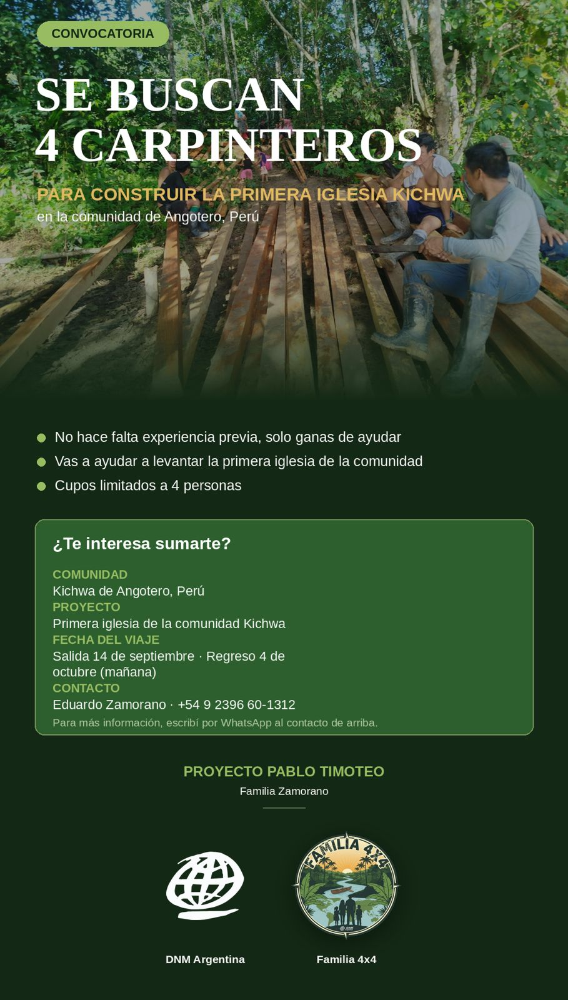

Campo de Servicio
Selva Peruana (Comunidad Kichwa - Angotero) & Argentina
Hito Actual
¡Madera lista para la 1ª Iglesia Kichwa!
Familia 4X4
Eduardo, Vania, David y Hannah
Próximo Desafío
Construcción: 14 de Sept a 4 de Oct
El Alto Napo: Testimonio en la Selva
Navegación y labor misionera junto a las comunidades Kichwa en Perú
Expedición Misionera — Proyecto Pablo Timoteo
Registros directos desde la selva peruana cruzando los ríos y conviviendo con los habitantes de la comunidad Kichwa de Angotero para llevar el Evangelio y edificar el primer templo.
Se necesitan cuatro carpinteros
“El Dios de los cielos, él nos prosperará, y nosotros sus siervos nos levantaremos y edificaremos” — Nehemías 2:20

Filosofía del Proyecto: Trabajo Colaborativo
Una premisa central del Proyecto Pablo Timoteo es la integración total con la población local. La iniciativa rechaza el modelo asistencialista tradicional, optando por una metodología de acompañamiento y esfuerzo compartido. "No se llegó a 'trabajar para' la comunidad, sino a trabajar junto a ella: cortando madera, cargando tablones y compartiendo cada comida del día."
El proyecto involucra a todos los estratos de la comunidad de Angotero: hombres y jóvenes en las tareas de mayor exigencia física en el monte, y mujeres y niños participando activamente en el estibado de la madera.
Misión de Carpintería: 14 de Sept al 4 de Oct
A pesar del sólido avance en la obtención de materiales (extracción en el monte, corte con motosierras y traslado fluvial), la comunidad carece de personal suficiente con el oficio técnico necesario para el ensamblaje y levantamiento de la iglesia.
Por este motivo, se ha abierto una convocatoria para 4 carpinteros (o personas con ganas de ayudar, no se requiere experiencia previa estricta) para la fase de levantamiento de la estructura.
Motivos de Oración para el Viaje
Gracias por sostener en oración y en obra este trabajo en la Amazonía:
1. Por los voluntarios
Oramos para que el Señor provea a los 4 carpinteros o colaboradores necesarios para este viaje. No se requiere experiencia previa, solo un corazón dispuesto a servir.
2. Por salud y fortaleza física
Pedimos protección para los miembros de la comunidad y el equipo de servicio, ya que el trabajo de mover y estibar la madera es sumamente exigente.
3. Por seguridad en los traslados
Rogamos por viajes seguros a través de los ríos amazónicos, que son la única vía de acceso a la comunidad de Angotero.
4. Por la comunidad Kichwa
Para que este proyecto fortalezca la unión de quienes sostienen la obra con sus propias manos, y que la iglesia sea un faro de luz en la región.
5. Por la logística y provisión
Oramos por Eduardo Zamorano y el equipo organizador, para que cada detalle del viaje y la construcción sea respaldado por la gracia de Dios.
Sumate al Proyecto Pablo Timoteo
Podés hacer llegar tu ofrenda directamente a través del Departamento Nacional de Misiones (DNM):
Transferencia Bancaria (DNM)
Banco: Santander Río (Cuenta Corriente)
Sucursal / Cuenta: 055 - Nº 1255/7
Titular: Unión de las Asambleas de Dios
CBU: 0720055720000000125572
CUIT: 30-53803502/1
Alias: MANDO.OBOE.JAPON
Envío de Comprobante
Enviar copia del comprobante al correo de DNM:
📧 recibos@dnmargentina.org
📞 Tel: 5411-4958-5095 / 5195
Aclaración obligatoria: Especificar que es para el "Proyecto de Eduardo y Vania Zamorano - Perú".
Contacto directo con Eduardo Zamorano:
WhatsApp Directo (+54 9 2396 601312)